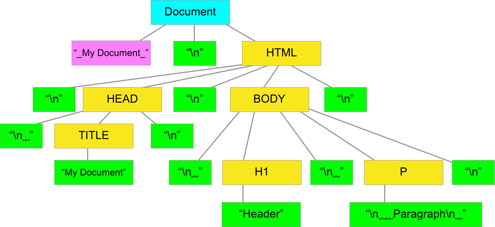

04 - Introduzione al DOM e jQuery
Attenzione!
Questa lezione sembrerà troppo approfondita e allo stesso tempo vaga considerato l’argomento che sto per trattare. Non preoccuparti se non capisci granchè, cerca comunque di cogliere il meccanismo di funzionamento dell’esempio che riporto in fondo alla lezione. Più avanti tratteremo questi argomenti in modo più dettagliato e diventerà tutto chiaro. Preferisco comunque affrontare questi argomenti “avanzati” fin da subito per evitare di basare l’apprendimento di Javascript sul solo comando console.log(). Mi sembra giusto passare all’interazione con html fin da subito per intuire con la pratica le potenzialità di questo linguaggio
Introduzione al DOM
E’ utile introdurre fin da subito il concetto di DOM per scrivere codice Javascript in grado di interagire con la pagina html altrimenti saremmo costretti ad utilizzare per tutto il corso console.log() e non vederne un’applicazione pratica.
In informatica il Document Object Model (spesso abbreviato come DOM), letteralmente modello a oggetti del documento, è una forma di rappresentazione dei documenti strutturati come modello orientato agli oggetti. È lo standard ufficiale del W3C per la rappresentazione di documenti strutturati in maniera da essere neutrali sia per la lingua che per la piattaforma. È inoltre la base per una vasta gamma di interfacce di programmazione delle applicazioni, alcune di esse standardizzate dal W3C.
Nativamente supportato dai browser per modificare gli elementi di un documento HTML, DOM è un modo per accedere e aggiornare dinamicamente il contenuto, la struttura e lo stile dei documenti. Per le numerose incompatibilità dovute al diverso tipo di gestione di DOM dai vari browser, il W3C ha stabilito delle specifiche standard.

Wikipedia - Document Object Model
Nelle lezioni precedenti abbiamo già utilizzato il concetto di DOM. Un esempio è la stampa diretta sulla pagina html:
document.write("ciao mondo");
Il “comando” document.write() è in realtà un oggetto Javscript document a cui si applica un metodo write() ovvero una funzione richiamabile solo nel contesto di un particolare oggetto (DOM = Document Object Model).
Introduzione alla libreria JQuery
Vediamo anche il metodo per aggiungere librerie esterne, necessario qualora volessimo utilizzare funzioni particolari di Javascript non presenti nel linguaggio standard. Installeremo JQuery perchè è una libreria popolare molto utilizzata proprio per la manipolazione del DOM ovvero degli elementi (oggetti) html.
jQuery è una libreria JavaScript per applicazioni web, distribuita come software libero, distribuito sotto i termini della Licenza MIT. Nasce con l’obiettivo di semplificare la selezione, la manipolazione, la gestione degli eventi e l’animazione di elementi DOM in pagine HTML, nonché semplificare l’uso di funzionalità AJAX, la gestione degli eventi e la manipolazione dei CSS.
Le sue caratteristiche permettono agli sviluppatori JavaScript di astrarre le interazioni a basso livello con i contenuti delle pagine HTML. L’approccio di tipo modulare di jQuery consente la creazione semplificata di applicazioni web e contenuti dinamici versatili. Nel 2020, jQuery risulta la libreria JavaScript più utilizzata in Internet, ovvero è presente nel 74,4% dei primi 10 milioni di siti Internet più popolari secondo W3Techs.
Scaricate quindi la libreria JQeury da JQuery - download
Una volta scaricato il file è necessario copiarlo nella root del progetto e creare un collegamento al file html. Vediamo le funzioni base della libreria JQuery. Le approfondiremo quando necessario più avanti nel corso
$(): Selettore di elementi html. E’ possibile selezionare un elemento tramite il suoid, la suaclasse, unattributo..
Alcuni metodi:
val(): legge/scrive l’attributovaluedell’elemento selezionatoclick(functionName): aggiunge l’evento click all’elemento selezionato e chiama la funzionefunctionName
Vediamo un esempio:
<!DOCTYPE html>
<html lang="en">
<head>
<meta charset="UTF-8">
<meta name="viewport" content="width=device-width, initial-scale=1.0">
<title>Document</title>
<style>
table{border: 1px dashed black}
</style>
</head>
<body>
<table>
<tr>
<td>Nome</td>
<td> <input type="text" id="myName"> </td>
</tr>
<tr>
<td>Nuovo Nome</td>
<td> <input type="text" id="new-name"> </td>
</tr>
</table>
<input type="button" value="OK" id="btn-ok">
<!-- Collegamento alla libreria JQuery.-->
<script type="text/javascript" src="jquery-3.5.1.min.js"></script>
<script>
function cambiaNome(){
//Seleziono l'elemento con id "new-name" e ne prelevo il valore con il metodo "val()"
//Memorizzo il risultato in una variabile di nome "nuovoNome"
nuovoNome = $("#new-name").val();
//Assegno all'elemento con id "myName" il valore associato alla variabile "nuovoNome"
$("#myName").val(nuovoNome);
//Pulisco il contenuto del valore dell'elemento con id "new-name"
$("#new-name").val("");
}
//Associo all'elemento con id "btn-ok" un evento.
//Al click sull'elemento con id "btn-ok" scatta la funzione "cambiaNome"
$("#btn-ok").click(cambiaNome)
</script>
</body>
</html>

ATTENZIONE: Il simbolo $ è un alias che sta per jQuery.E’ importante saperlo perchè ci sono altre librerie che utilizzano il simbolo $ e potrebbero quindi generare un conflitto. Per ovviare a ciò è possibile utilizzare il nome originale jQuery al posto del suo alias $.
Con il comando $.noConflict() è possibile eliminare la definizione dell’ alias $ evitando quindi conflitti di ogni genere. A quel punto dovremmo però utilizzare necessariamente jQuery al posto di $
DOM ed Eventi
Appena la pagina va in esecuzione il browser deve costruire il DOM ma nel contempo potrebbe già partire il codice Javascript e l’esecuzione potrebbe portare a qualche errore in certi casi a causa di asincronismo. L’esempio di sopra potrebbe essere uno di questi. Per ovviare a ciò è necessario racchiudere l’evento all’interno di una funzione anonima:
$( function(){
//evento
});
Vediamolo applicato all’esempio di prima:
<!DOCTYPE html>
<html lang="en">
<head>
<meta charset="UTF-8">
<meta name="viewport" content="width=device-width, initial-scale=1.0">
<title>Document</title>
<style>
table{border: 1px dashed black}
</style>
</head>
<body>
<table>
<tr>
<td>Nome</td>
<td> <input type="text" id="myName"> </td>
</tr>
<tr>
<td>Nuovo Nome</td>
<td> <input type="text" id="new-name"> </td>
</tr>
</table>
<input type="button" value="OK" id="btn-ok">
<!-- Collegamento alla libreria JQuery.-->
<script type="text/javascript" src="jquery-3.5.1.min.js"></script>
<script>
function cambiaNome(){
nuovoNome = $("#new-name").val();
//Assegno all'elemento con id "myName" il valore associato alla variabile "nuovoNome"
$("#myName").val(nuovoNome);
//Pulisco il contenuto del valore dell'elemento con id "new-name"
$("#new-name").val("");
}
//L'evento sarà pronto a scattare soltanto quando la struttura del DOM sarà preparata
$( function(){
$("#btn-ok").click(cambiaNome)
});
</script>
</body>
</html>
In questo modo si ha la sicurezza che il codice javascript e quindi l’evento possa scattare solo dopo la creazione del DOM. Il che non significa che comprende il caricamento di tutti gli oggetti come immagini, video o alcune formattazioni testuali ma solo la struttura html come oggetto Javascript che è tuttavia sufficiente al corretto funzionamento del codice Javascript.
Altri metodi equivalenti:
$().ready(function (){
//event
})
$(document).ready (function () {
//event
})
$(window).ready(function () {
//event
})